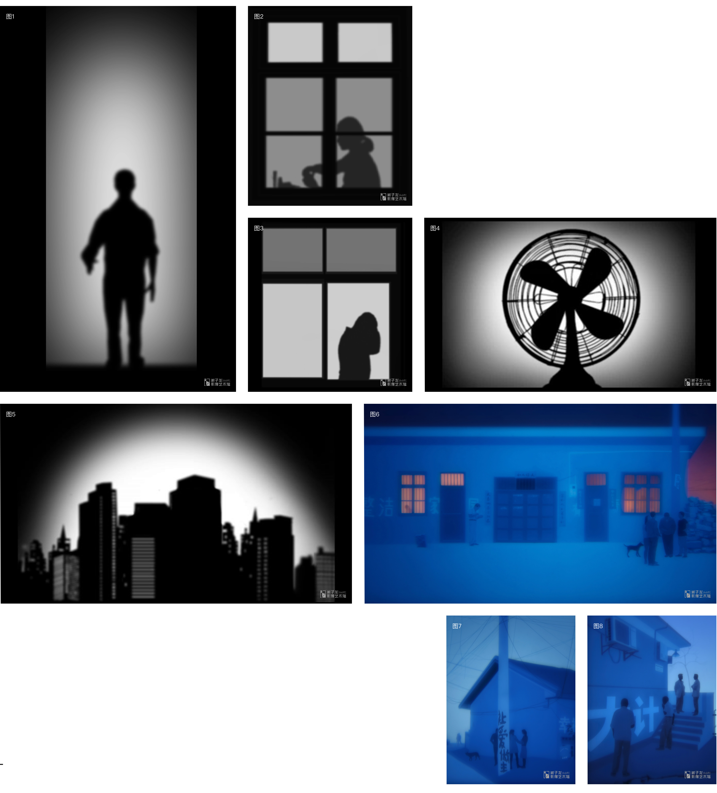
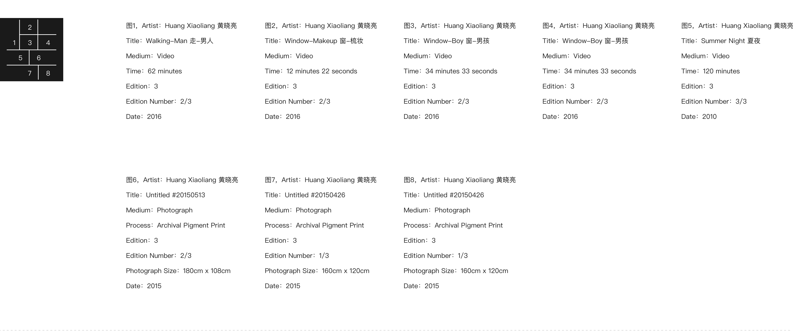

当前位置：学术 - 当代影像 - 详情
黄晓亮 1985年生于湖南吉首，2009年毕业于青岛大学数码媒体艺术专业。2010年，黄晓亮荣获美国特尼基金会奖和三影堂摄影艺术新人奖，以及北京今日美术馆方骏艺术奖金奖，2011年黄晓亮被荷兰FOAM摄影博物馆Foam Paul Huf 提名。目前黄晓亮分别在长沙和北京工作和生活。
这是一项围绕日常进行的影像创作，主要来自于生活中的片段。这些片段可以理解为“日常细节”。
当我们以一个旁观者的身份观看自己所生存的世界，随着时间的推演，生活情节在不断延伸的同时，自己也成为现实生活参与者的一部分。这是一种双重身份在日常生活中的体现，也是最耐人寻味的矛盾关系。这种关系在虚构和现实之间相互调换或徘徊。


展览现场
 XPM志愿者招募
XPM志愿者招募
 XPM名人堂
XPM名人堂
 XPM会员招募
XPM会员招募